Synchrotron Notes
Here I included some of my notes when working at the beamlines of Stanford Synchrotron Radiation Lightsource, and also about how to use the data analysis softwares Athena, LARCH and SIXPACK.
Typos could be found on these lab notes, as English is not my native language. If you find some, please let me know to make the necessary corrections. Thanks!
1 DATA ANALYSIS
Download the Orange Book here

The link above contains the scanned version of the synchrotron visit logbook with all the notes taken during synchrotron visits, from page 1 to page 233 of the logbook (last synchrotron visit scanned: December 2024). This helps identify the labels used on the data files scanned and if there were specific observations to note during the synchrotron visit.
Remote Access to SSRL data
- Download the WinSCP app here: WinSCP
- This app will require you to input the information of the folder that you need to access remotely.
- Fill out the information required:
- Host name
- User name
- Password
The link to the manual for data analyses of XAS is at this link: XAS Analysis Manual
References:
Webb, S. (2006). XRD-BS. https://www-ssrl.slac.stanford.edu/~swebb/xrdbs.htm
Webb, S. M. (2005). SIXPack a Graphical User Interface for XAS Analysis Using IFEFFIT. Physica Scripta, 1011. https://doi.org/10.1238/physica.topical.115a01011
For samples analyzed at SSRL:
SAMS VIEW
- Add many files. All must be scan replicates of the same sample (files must be .xdi or .dat)
- Detector: Germanium (most commonly).
- Press Apply All.
- Channel
- 1 for Arsenic. Or,
- 2 for Iron (check notebook)
- Calibration. To shift my value of gold to wherever the peak of gold is on my muT2 Plot Type.
- Derivative must be First. Second one is too noisy.
- Replot
- Select the scan you want to calibrate.
- Press Find Data E0. This finds the peak for you. It must be around 11919 for gold, or 7112 for iron foil.
- Apparent: the one it finds
- Actual: 11919 (gold) or 7112 (iron)
- Press Enter
- Press Apply Shift to Data. It will apply the shift that it found.

- Clean the channels with weird data:
- Plot type: Column
- Derivative: None
- Column section:
- IFall (to see all the channels plot at once)
- IFind (to check channel by channel individually)
- Zero Selected Channel: for channels that are not working correctly
- Plot Type: muF
- Derivative: None
- Stack All Plots
- Save
- Group Spectra
References:
- Ravel, B., & Newville, M. (2005). ATHENA, ARTEMIS, HEPHAESTUS: data analysis for X-ray absorption spectroscopy usingIFEFFIT. Journal of Synchrotron Radiation, 12(4), 537-541. https://doi.org/10.1107/s0909049505012719
1.0.0.1 DATA NORMALIZATION
- File
- Import Files: your average .xdi file
- Numerator: u
- Denominator: nothing
- OK
- Emax: 1100
- E0: Depending on the element you are looking for, see below:
- 11885 for Arsenic
- 7125 for Fe
- 6565 for Mn
- 13100 for Pb
- Deglitch and Truncate
- Locate this option on the Drop Menu under Main Window
- Truncate Data if you need to drop the last 3 data points (e.g. fluorescence from 11-2)
- Select the point you want to truncate at the end of the data. (Erase the last 3 points).
- Main Window
- Shade the first sample
- On the Normalization Section:
- Pre-edge range: from -150, to: -70.
- Normalization range: from 150, to: target the end of your curve
- With this, you are Normalizing the data, so the Edge step is [post-edge line - pre-edge line], this may have gotten a value of around 0.something.
- Choose the type of Normalization that will make the pre-edge and post-edge line to be almost parallel for your sample.
- Normalization order
- 1 = no slope, (this one is UNcommon)
- 2 = linear slope,
- 3 = quadratic function
- Normalization order
- Forward Fourier transform parameters
- K-range should be the same in ALL the samples
- Mark all your samples.
- Group
- Set marked group values to current.
- Finally, mark all your samples.
- File
- Save EACH marked current group as:
- Normalized E
- Save EACH marked current group as:
1.0.0.2 LINEAR COMBINATION FITTING (automatic)
NOTE: For this process you must have all the scanned standards possibly existing on your system, to get how much percentage of each species is present on your sample.
Load your standards and sample files.
Shade your sample, do not mark it.
Mark your standards.
On the drop menu, look for the option: Linear Combination Fitting
Press Use Marked Groups.
On the Combinatorics section: select the number of standards you are using on the combination.
- Use at most ____ standards (the amount of standards you are using).
Beside the enlisted Standards, there is a “Required” checkbox, check it for your initial and ending species.
Press “Fit all combinations”
Results will be shown on the “Combinatorics” tab.
- The first combination on this list is your best fit, the one with the lower R-factor.
- The weight for each component is the percentage of the composition of your sample.
Save combinatorial results as an Excel file
Unselect your standards and select JUST the samples.
Now under the Standard tab, we have the correct weight parameters from the Combinatorial.
Press “Fit Marked Groups”, for all the scans to be fitted to this parameter.
Under the Sequence tab, we have all the scans with the composition of each (see column titles of the table), and the concentration of each.
Save that table by pressing “Save fit sequence report as an Excel file”
We can plot that data with “Plot components from fit sequence”.
References:
- Newville, M. (2013). LARCH: an analysis package for XAFS and related spectroscopies. Journal of Physics Conference Series, 430, 012007. https://doi.org/10.1088/1742-6596/430/1/012007
1.0.0.3 XAFS Data processing
This example shows how to use Larch from Python/Jupyter for basic XAFS data processing:
- read data from an Athena Project File
- do XAFS background subtraction with autobk()
- do XAFS Fourier transform with xfft()
https://github.com/xraypy/xraylarch/blob/master/examples/Jupyter/XAFS_Processing_matplotlib.ipynb
1.0.0.4 Iron K-edge processing example
https://github.com/xraypy/xraylarch/blob/master/examples/Jupyter/Fe-treatment.ipynb
1.0.0.5 XANES PCA train
https://github.com/xraypy/xraylarch/blob/master/examples/Jupyter/XANES_PCA_example.ipynb
1.0.0.6 FEFF Fitting
https://github.com/xraypy/xraylarch/blob/master/examples/Jupyter/feffit_cu_3paths.ipynb
2 SSRL
2.1 BL 11-2 XAS

- Refill the Germanium detector with LN2 once every 24 hours. Log in their notebook (SSRL) the time and date that you refilled the detector.
- Lock the key of the hutch back in its box once you finish using it, and log that information in their notebook.
- The detector foil filter is chosen as: Foil filter = [ Z of Element of interest - 1 ]. Example, for Arsenic, the foil filter needed is Germanium. But for Iron it will be Manganese foil.
- When Beam is On, we move the Gains in Ion Chamber Control (I0, I1, I2, I3).
- When Beam is Off, we move the Offset in Ion Chamber Control (I0, I1, I2, I3).
2.1.0.1 CALIBRATION
Calibration with Gold
- Start Run
- Change the output file, call it like: Au_cal_date_time
- Apply -> Start
- Check the uXAS Plot Utility and deselect FF/I0
- Select the Log I1/I2 (because I2 is your gold reference).
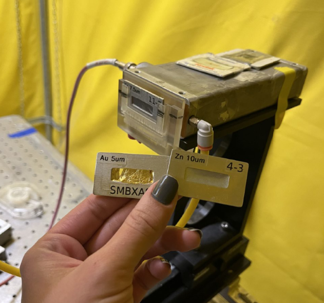
- Math -> First Derivative
- Look at the peak, the position of Gold should be ar 11919 eV.
- Configure -> Calibrate MONO
- Move to: what you just measure (peak of derivative, not the real number)
- Calibration eV: type the real value of Gold: 11919 eV.
- Move -> Apply
- MONO position should be now 11919 now on the uXaS GUI.
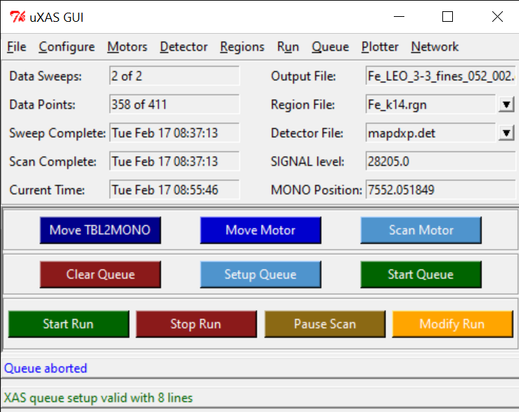
- Re SCAN if you moved your Gold Calibration by hitting Start Run.
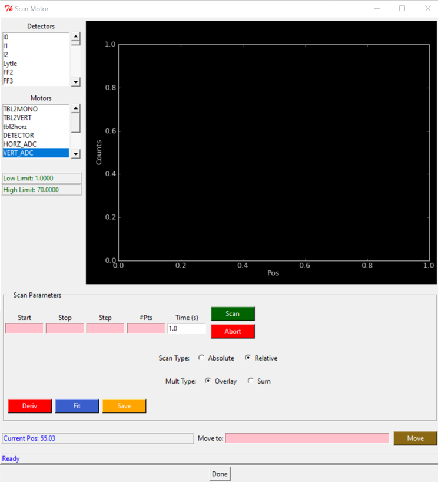
- Save New Calibration file with the new time and date.
2.1.0.2 HARMONICS
This may require the help of the beamline scientist, depending on the beamline you are working with.
- Make sure you have your energy set up to the element of interest:
- TBLMONO -> 8000 for Iron, or 12000 for Arsenic
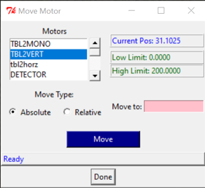
Detuning
- Go to MONO Tuning screen
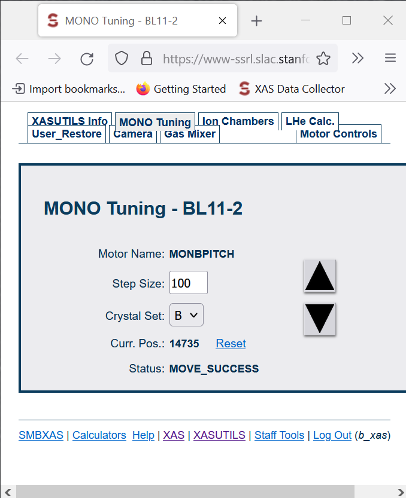
- Click UP arrow and check for CH1.
- Continue clicking Up arrow until you see that CH1 doesn’t go higher anymore, and it starts actually decreasing (even when you hit UP).
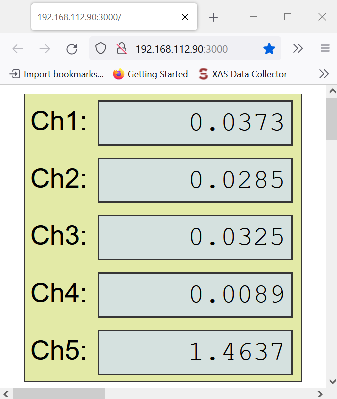
- Take note of that maximum number in CH1.
- Now multiply that number by 0.50, and take note on that.
- Start clicking DOWN now, until you reach that new number on your CH1, because you are detuning.
2.1.0.3 ALLIGNMENT
Sample position centered on the sample holder window. We scan all the holder and select the center of each window.
- Detector = I1, because we are using the Ion Chamber as detector.
- Check your current position.
- Scan Motor
- Motors = VERT_ADC
- Scan type: Absolute
- Start:5 Stop:65 Step:0.5
- SCAN
- Wait until the screen says: Scan Finished. It goes all the way scanning the entire sample holder.
- Right click on the plot screen, to get new plotter, and find the center of each window. Take notes of each position for future reference. (V)
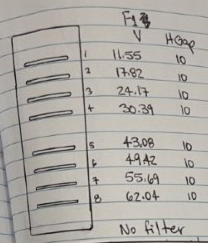
- Open the hutch to take detector cover Off, and and add the Iron foil filter (if used). Be careful not to bring the metallic cover, jut the one you used to protect it.
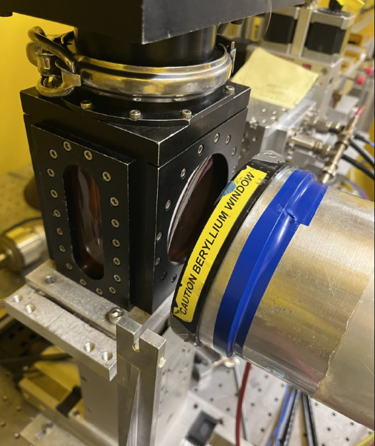
- Close the hutch and save the key in box.
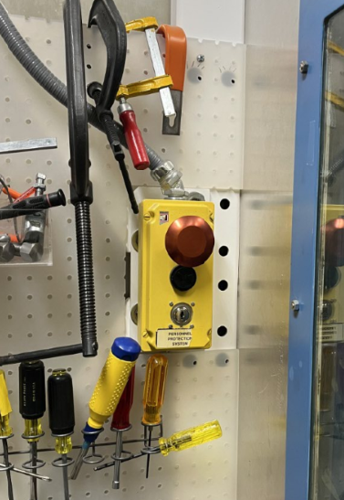
- Press START to check no channels are red.
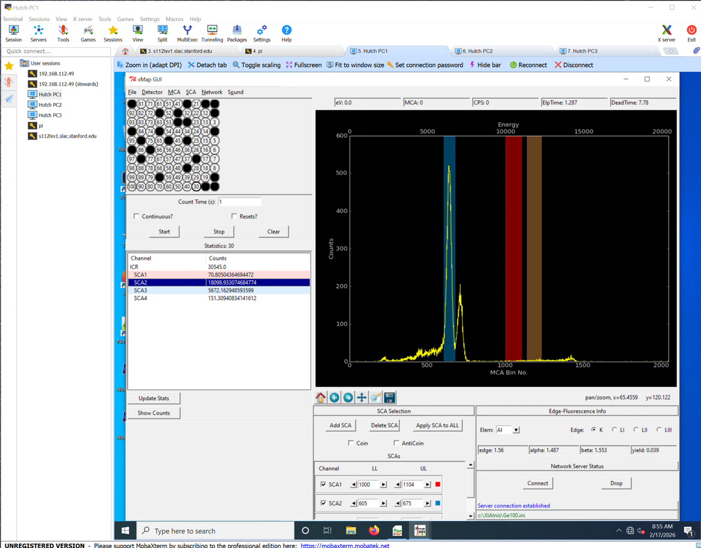
- Move detector back close to the sample, using Motor -> Detector (~55). When you see the Iron foil is moving a little, it is close enough.
2.1.0.4 LINEARITY
Here we are making sure that we are on the linear part of the deadtime curve, and not over the curvy part.
Detector
- In here we use the detector, so we need to have it uncover.
- Go to Scan Motor -> Motors -> Detector.
- Check your detector current position.
- Check your Scan Type is ABSOLUTE.
MONO Position
We need to Fluorescence the Arsenic which is at 11875, but right now it is at 11683, so we need to move the MONO for a value after that Arsenic Fluorescence value.
- Motor -> TBLMONO -> Scan Type:Absolute -> Move to: 11875 (Arsenic V)
- In uMap Gui, click START.
- Check the 100 channels, none should be red.
Ionic Chamber Control
- Got to the Ionic Chamber Control (Channel 1 to 5), and play with the “Gain” until all the channels are below 5, and as close to zero as possible, but never zero.
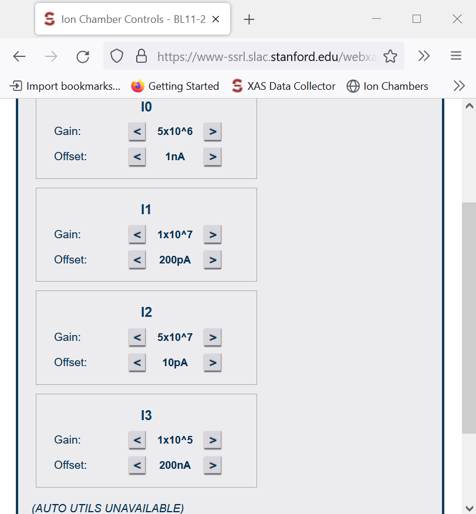
uMAP GUI
- On uMap GUI, click START, and check that NONE of the 100 sensors are red.
- The TOTAL counts on the ICR should never overpass 100K counts.
- SC1 is the Arsenic channel, and we need it to be the highest we could get, while not overpassing the 100K counts int he ICR channel.
Choosing an HGap for each sample
SHGAP is what we want to open or close to get the beam intensity to hit our sample. Zero is the center of the window, meaning it is totally close. The higher the number, the wider the window. We can go until 10.
- Go to Scan Motor -> Motors -> VERT_ADC -> Scan Type:Absolute -> Move to: Move to the position of the first sample you are analyzing.
- Wait for the message saying: “Moving completed”.
- In uMap Gui, click START to check that your channels are NOT red.
- SVGAP is ALWAYS 2.
- Go to Move Motor -> SHGAP and insert a small value if the concentration of your sample is high, for example: 3.
- Wait for the message saying: “Moving completed”.
- In uMap Gui, click START.
- Check the 100 channels in uMap Gui, none should be red.
- Check that your total ICR counts have NOT overpass the 100K counts.
- If your channels are not red, and your total ICR counts are far from 100K, you can increase the SHGAP.
- Never exceed the limit of 10 for SHGAP.
- Once you found the desired SHGAP, take note on that value for each sample.
- Move to your next sample to choose a good SHGAP for that sample too.
- Repeat those steps for all the samples.
2.1.0.5 OFFSET
Beam OFF
- Go to the Ionic Chamber Control (Channel 1 to 5), and play with the “Gain” until all the channels are below 5, and as close to zero as possible, but never zero.
- Offset -> Detector -> Settings -> Offset
Beam OFF
- Counts: 10 Do not press DONE yet
- Wait for 10 seconds until the Lead shutters are down (BEAM OFF), interrupting the beamline.
- Click “DONE”.
- Setup Queue
- Insert names, Y-position (HGap), and Z-position (VERT_ADC)
- The amount of Swipes to run for each sample will depend on the current ICR counts for that specific sample. Choose a number of swipes, that multiplied by the total counts of ICR, and multiplied by the 100Channels, equals around 1 Million counts.
- Save Queue
- Accept
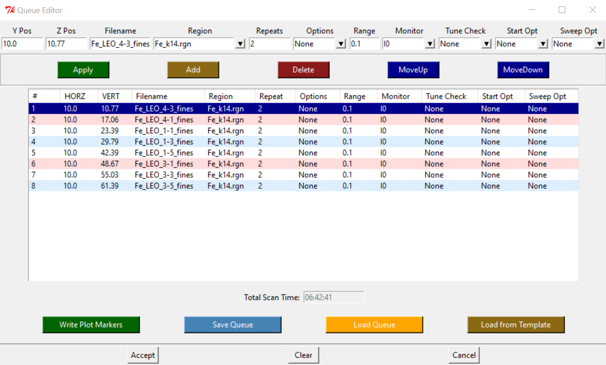
Beam ON
- Start Queue
- Check at the Finish Time of that scan.
Beam OFF
Liquid Nitrogen
- Pick up some Liquid Nitrogen from the LN2 fill station. Use mask and gloves.
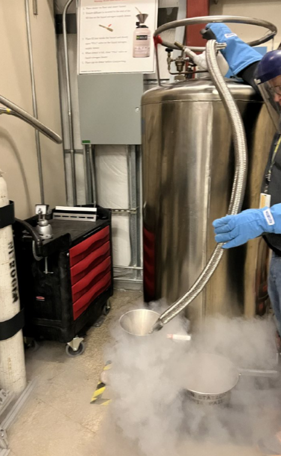
Move detector away
- Move the detector back from the sample, to distant it and protect it when moving out the samples.
- Move Motor -> Detector -> Scan Type: Absolute -> Move to: 100
- Cover the detector.
Close pump and change cryostat
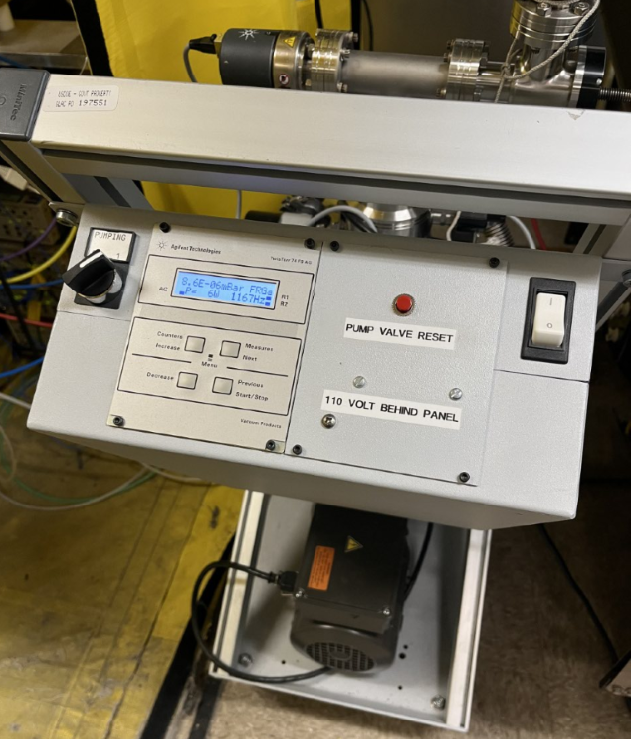
- Close the valve of the pump and Turn it Off.
- Disconnect the vacuum tube from the top of the cryostat. It moves crazy so hold it tight to not hit anything. There is a small cap on that tube, so DO NOT lose it.
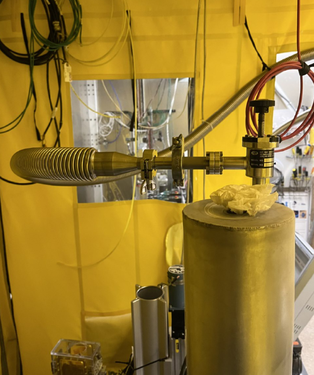
- Take out the cryostat. Unscrew it and place those screws in a known place. DO NOT loose them.
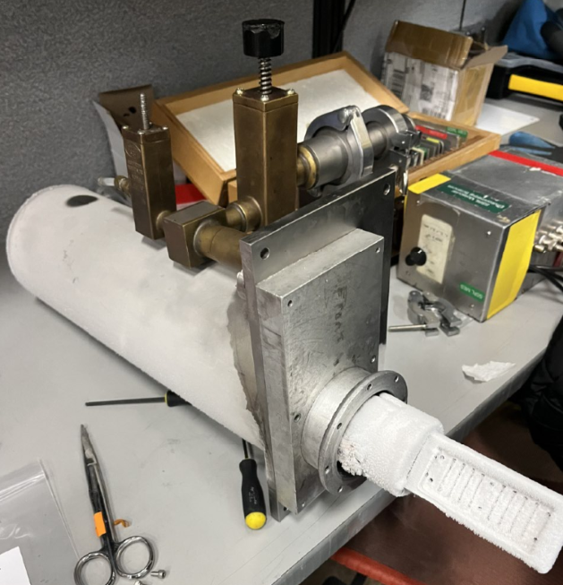
- Take the new cryostat and put it on position. Screw it on 2 corners.
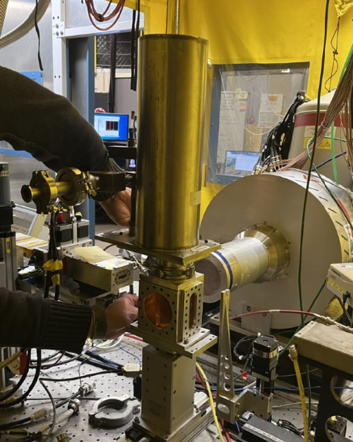
Pump ON
- Connect the vacuum tube again.
- Turn On Pump and Open the valve of the pump and Start pump. A vacuum of 10-3 or 10-4 is good to start adding the LN2.
- Take the LN2 dewar and the funnel and fill up the Cryostat. It will probably take 2 dewars.
- Cover the top of the cryostat with a kimwipe, very lose on top to avoid LN2 to escape faster.
- Refill the Germanium Detector with LN2 once every 24 hours, or each time you change your cryostat sample holder.
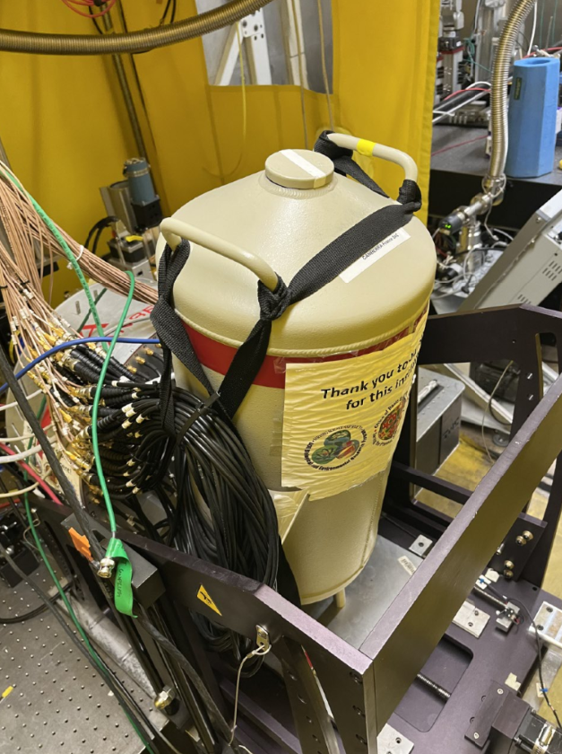
Close hutch
- Pick up key from the box.
- Close the hutch.
Beam ON
Channels
- In uMap Gui, click START, and immediately check that all your channels are OK (no red).
- Got to the Ionic Chamber Control (Channel 1 to 5), and play with the “Gain” until all the channels are below 5, and as close to zero as possible, but never zero.
Key
- Return the key to the box.
- Log in the time you put the hutch key back in its box.
2.2 BL 7-2 XRF Imaging
Work in progress…
2.3 BL 2-3 XRF Imaging
Work in progress…
3 SAMPLE PREP


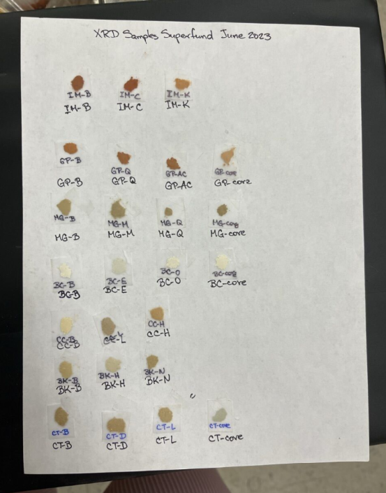

4 DATABASES
International XAFS Database Portal of the Japanese XAFS Society
Masashi Ishii, https://ixdb.jxafs.org/, established in 2024.
Reference:
Ishii, M., Matsuda, A., Sakamoto, K., Yamashita, S., Niwa, Y. & Inada, Y. (2025). J. Synchrotron Rad. 32, https://doi.org/10.1107/S1600577525002206.
Solid Spectroscopy Hosting Architecture of Databases and Expertise
International X-ray Absorption Society (IXAS) Data Library